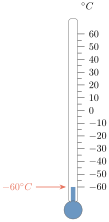
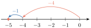
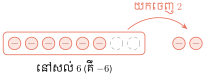
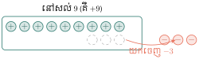

វត្ថុបំណង
- បកស្រាយចំណោទ ដើម្បីបង្ហាញសញ្ញាណចំនួនគត់រ៉ឺឡាទីប
- ធ្វើប្រមាណវិធីលើចំនួនគត់រ៉ឺឡាទីប
- ដោះស្រាយចំណោទដែលទាក់ទងនិងចំនួនគត់រ៉ឺឡាទីប ។
1. សញ្ញាណចំនួនគត់រ៉ឺឡាទីប
តើវិធីដកអាចប្រព្រឹត្តទៅបានគ្រប់ករណីឬទេ?
ឧទាហរណ៍ 1 ៖ បើគេមានតែចំនួនគត់ វិធីដកមិនអាចប្រព្រឹត្តិទៅបាន កាលណាតួទី 1 តូចជាងតួទី 2 ។ ដូច្នេះដើម្បីឱ្យវិធីដកអាចប្រព្រឹត្តិទៅបានគ្រប់ករណី ៖
គេត្រូវបង្កើតចំនួនគត់ដែលមានសញ្ញាដកនៅពីមុខហៅថា ចំនួនគត់រ៉ឺឡាទីបអវិជ្ជមាន ។ គេបាន \(\displaystyle 7-8=-1\), \(\displaystyle 7-9=-2\), \(\displaystyle 7-10=-3\) ។
ឧទាហរណ៍ 2 ៖ សីតុណ្ហភាព \(\displaystyle 60^{\circ}\text{C}\) ក្រោមសូន្យ តាងដោយ \(\displaystyle -60^{\circ}\text{C}\) ។ ចំនួនអវិជ្ជមាន \(\displaystyle -60\) ជាចំនួនគត់រ៉ឺឡាទីប ។

ជាទូទៅ ចំនួន \(\displaystyle \dots, -3, -2, -1, 0, 1, 2, 3, \dots\) ហៅថាចំនួនគត់រ៉ឺឡាទីប ។
សម្គាល់ ៖ គេអាចសរសេរចំនួនគត់រ៉ឺឡាទីបវិជ្ជមានដោយគ្មានសញ្ញា \(\displaystyle +\) នៅពីមុខក៏បានដែរ ដូចជា \(\displaystyle 1, 2, 3, \dots\) ចំណែក \(\displaystyle 0\) ជាចំនួនមិនវិជ្ជមាននិងមិនអវិជ្ជមាន ។ គេមានបន្ទាត់មួយដែលមានទិសដៅ ។ នៅលើបន្ទាត់នោះ គេក្រិតយកឯកតាស្មើៗគ្នាហៅថា បន្ទាត់ចំនួន ។
ក្នុងការអនុវត្ត
- គេប្រើចំនួនគត់រ៉ឺឡាទីបវិជ្ជមានសម្រាប់សម្គាល់ប្រាក់ចំណេញក្នុងអាជីវកម្ម សីតុណ្ហភាពលើសូន្យអង្សា កាលបរិច្ឆេទខាងមុខ ឬទីតាំងនៅខាងស្តាំ \(\displaystyle \dots\) ។
- គេប្រើចំនួនគត់រ៉ឺឡាទីបអវិជ្ជមានសម្រាប់សម្គាល់ប្រាក់ខាតក្នុងអាជីវកម្ម សីតុណ្ហភាពក្រោមសូន្យអង្សា កាលបរិច្ឆេទកន្លងទៅ ឬទីតាំងនៅខាងឆ្វេង \(\displaystyle \dots\) ។
| ថ្ងៃ | ចន្ទ | អង្គារ | ពុធ | ព្រហស្បតិ៍ | សុក្រ | សៅរ៍ | អាទិត្យ |
| ប្រាក់គិតជាម៉ឺនរៀល | -4 | +2 | +3 | -2 | -3 | +5 | +7 |
ខាងក្រោមជាប្រាក់ខាតនិងប្រាក់ចំណេញគិតជាម៉ឺនរៀលក្នុងហាងប្តូរប្រាក់មួយ ។ ពិពណ៌នាជួរឈរសម្រាប់ថ្ងៃព្រហស្បតិ៍និងថ្ងៃសៅរ៍ ។
- នៅថ្ងៃព្រហស្បតិ៍បង្ហាញថា ហាងនោះបានខាតអស់ប្រាក់ 2 ម៉ឺនរៀល (\(\displaystyle -2\)) ។
- នៅថ្ងៃសៅរ៍បង្ហាញថា ហាងនោះចំណេញបានប្រាក់ 5 ម៉ឺនរៀល (\(\displaystyle +5\)) ។
ប្រាក់ចំណេញ ជាប្រាក់ដែលទទួលបានក្នុងអាជីវកម្មពីការលក់ផលិតផលឬសេវាកម្មបន្ទាប់ពីទូទាត់ចំណាយរួច ។ ឧទាហរណ៍ ៖ សំលក់នំអន្សមចេកទទួលបានប្រាក់ 40 000 ៛ ហើយគាត់ចំណាយអស់ 30 000 ៛ ។ ដូច្នេះសំទទួលបានប្រាក់ចំណេញចំនួន (+) 10 000 ៛ ។
ប្រាក់ខាត ជាប្រាក់ដែលបាត់បង់ក្នុងអាជីវកម្មនៅពេលការចំណាយលើសពីប្រាក់ចំណូលទទួលបានពីការលក់ផលិតផលឬសេវាកម្ម ។ ឧទាហរណ៍ ៖ ណារីលក់ផ្លែប៉ោម 10 kg ទទួលបានប្រាក់ 80 000 ៛ ប៉ុន្តែគាត់ចំណាយ 100 000 ៛ ។ ដូច្នេះណារីខាតប្រាក់ចំនួន (-) 20 000 ៛ ។
ចំណាំ ៖ អាជីវកម្មត្រូវផ្តោតការយកចិត្តទុកដាក់លើចំណេញនិងខាត ។ ប្រសិនបើការធ្វើអាជីវកម្មខាត នោះយើងនឹងពិបាកបន្តដំណើរការទៀត ។ ដូច្នេះម្ចាស់អាជីវកម្មចាំបាច់ត្រូវសន្សំប្រាក់ចំណេញទុកសម្រាប់ប្រើប្រាស់នៅពេលអាជីវកម្មទទួលរងការខាតបង់ដើម្បីកាត់បន្ថយហានិភ័យនៃការដួលរលំអាជីវកម្ម ។
ក្នុងចំណោមចំនួន \(\displaystyle 0.4, \frac{1}{2}, -5, +1.2, -9, -1, 0, 3, 5\) និង \(\displaystyle 46\) ។ តើចំនួនណាជាចំនួនគត់រ៉ឺឡាទីបវិជ្ជមាននិងចំនួនណាជាចំនួនគត់រ៉ឺឡាទីបអវិជ្ជមាន?
មើលចម្លើយ
- ចំនួនគត់រ៉ឺឡាទីបវិជ្ជមាន គឺចំនួនគត់ដែលធំជាង \(\displaystyle 0\) ៖ \(\displaystyle 3, 5, 46\) (ឬ \(\displaystyle +3, +5, +46\)) ។
- ចំនួនគត់រ៉ឺឡាទីបអវិជ្ជមាន គឺចំនួនគត់ដែលមានសញ្ញាដកនៅពីមុខ ៖ \(\displaystyle -1, -5, -9\) ។
សម្គាល់ ៖ ចំនួន \(\displaystyle 0\) ជាចំនួនមិនវិជ្ជមាននិងមិនអវិជ្ជមានទេ ។ ចំណែក \(\displaystyle 0.4, \frac{1}{2}, +1.2\) មិនមែនជាចំនួនគត់ទេ (ជាចំនួនទសភាគនិងប្រភាគ) ។
2. តម្លៃដាច់ខាតនិងលំដាប់នៃចំនួនគត់រ៉ឺឡាទីប
2.1. តម្លៃដាច់ខាតនៃចំនួនគត់រ៉ឺឡាទីប
ឧទាហរណ៍ ៖ នៅលើបន្ទាត់ចំនួន ចម្ងាយពី \(\displaystyle 3\) ទៅ \(\displaystyle 0\) ស្មើនឹង \(\displaystyle 3\) ឯកតា ហើយចម្ងាយពី \(\displaystyle -3\) ទៅ \(\displaystyle 0\) ស្មើនឹង \(\displaystyle 3\) ឯកតាដែរ ។
សន្និដ្ឋាន តម្លៃដាច់ខាតនៃមួយចំនួន គឺជាចម្ងាយពីចំនួននោះទៅគល់ \(\displaystyle 0\) ។ តម្លៃដាច់ខាតនៃ \(\displaystyle a\) គេកំណត់សរសេរ \(\displaystyle |a|\) ដែល
ឧទាហរណ៍ ៖ \(\displaystyle |-3|=3\), \(\displaystyle |3|=3\), \(\displaystyle |0|=0\) ។
គណនាតម្លៃដាច់ខាតនៃ \(\displaystyle -25, 13\) និង \(\displaystyle +10\) ។
\(\displaystyle |-25|=25\), \(\displaystyle |13|=13\) និង \(\displaystyle |+10|=10\) ។
គណនាតម្លៃដាច់ខាត \(\displaystyle |-5|\), \(\displaystyle |7|\) និង \(\displaystyle |+34|\) ។
មើលចម្លើយ
- \(\displaystyle |-5| = 5\) (ព្រោះចម្ងាយពី \(\displaystyle -5\) ទៅគល់ \(\displaystyle 0\) ស្មើនឹង \(\displaystyle 5\) ឯកតា)
- \(\displaystyle |7| = 7\) (ព្រោះចម្ងាយពី \(\displaystyle 7\) ទៅគល់ \(\displaystyle 0\) ស្មើនឹង \(\displaystyle 7\) ឯកតា)
- \(\displaystyle |+34| = 34\) (ព្រោះចម្ងាយពី \(\displaystyle +34\) ទៅគល់ \(\displaystyle 0\) ស្មើនឹង \(\displaystyle 34\) ឯកតា)
2.2. លំដាប់នៃចំនួនគត់រ៉ឺឡាទីប
ឧទាហរណ៍ ៖ នៅលើបន្ទាត់ចំនួន គេឃើញថា \(\displaystyle 2<4\) ហើយ \(\displaystyle -4<-2\) ។
សន្និដ្ឋាន
- ចំពោះចំនួនវិជ្ជមាន ចំនួនដែលមានតម្លៃដាច់ខាតធំ ជាចំនួនធំជាង ។
- ចំពោះចំនួនអវិជ្ជមាន ចំនួនដែលមានតម្លៃដាច់ខាតតូច ជាចំនួនធំជាង ។
- ចំនួនដែលស្ថិតនៅខាងស្តាំធំជាងចំនួនដែលស្ថិតនៅខាងឆ្វេង ។
\(\displaystyle a\) និង \(\displaystyle b\) ជាពីរចំនួនគត់រ៉ឺឡាទីបអវិជ្ជមានដែល \(\displaystyle a>b\) ។ ប្រៀបធៀប \(\displaystyle |a|\) និង \(\displaystyle |b|\) ។
ឧបមាថា \(\displaystyle a=-2\) ហើយ \(\displaystyle b=-4\) ដែល \(\displaystyle a>b\) ប៉ុន្តែ \(\displaystyle |a|=|-2|=2\), \(\displaystyle |b|=|-4|=4\) នាំឱ្យ \(\displaystyle |a|<|b|\) ។
សរសេរចំនួនគត់រ៉ឺឡាទីប \(\displaystyle -10, -20, 3, 7, -1, -40, 9, 4, 0, 2\) ៖
- ក. តាមលំដាប់ឡើង
- ខ. តាមលំដាប់ចុះ ។
មើលចម្លើយ
- ក.
តាមលំដាប់ឡើង (ពីតូចទៅធំ) ៖
\[-40, -20, -10, -1, 0, 2, 3, 4, 7, 9\] - ខ.
តាមលំដាប់ចុះ (ពីធំទៅតូច) ៖
\[9, 7, 4, 3, 2, 0, -1, -10, -20, -40\]
3. ចំនួនផ្ទុយនិងការដៅចំណុចលើបន្ទាត់ចំនួន
3.1. ចំនួនផ្ទុយ
នៅលើបន្ទាត់ចំនួន គេដាក់សញ្ញា \(\displaystyle (-)\) ពីមុខមួយចំនួន ដើម្បីសម្គាល់ចំនួនផ្ទុយនៃចំនួននោះ ។ ឧទាហរណ៍ ៖ \(\displaystyle -(2)\) ជាចំនួនផ្ទុយនៃ \(\displaystyle 2\) ដូច្នេះ \(\displaystyle -(2)=-2\) ፤ \(\displaystyle -(-2)\) ជាចំនួនផ្ទុយនៃ \(\displaystyle -2\) ដូច្នេះ \(\displaystyle -(-2)=2\) ។
ជាទូទៅ
ដៅចំនួន \(\displaystyle -(-1)\), \(\displaystyle -(4)\) និង \(\displaystyle -[-(-3)]\) នៅលើបន្ទាត់ចំនួន ។
- \(\displaystyle -(-1) = 1\)
- \(\displaystyle -(4) = -4\)
- \(\displaystyle -[-(-3)] = -[3] = -3\)
បន្ទាត់ចំនួន ៖

បំពេញចំនួនក្នុងប្រអប់ ៖
- ក. \(\displaystyle -(-15) = \square\)
- ខ. \(\displaystyle -[-(+8)] = \square\) ។
មើលចម្លើយ
- ក. \(\displaystyle -(-15) = 15\) (ចំនួនផ្ទុយនៃ \(\displaystyle -15\) គឺ \(\displaystyle 15\)) ។
- ខ. \(\displaystyle -[-(+8)] = -(-8) = 8\) (ចំនួនផ្ទុយនៃ \(\displaystyle -8\) គឺ \(\displaystyle 8\)) ។
3.2. ការដៅចំណុចលើបន្ទាត់ចំនួន
នៅលើបន្ទាត់ចំនួន គេតាងដោយ \(\displaystyle x'x\) ។ \(\displaystyle A\) ជាចំណុចនៃកន្លះបន្ទាត់ \(\displaystyle Ox\) ដែល \(\displaystyle OA=4\) និង \(\displaystyle B\) ជាចំណុចនៃកន្លះបន្ទាត់ \(\displaystyle Ox'\) ដែល \(\displaystyle OB=3\) ។

- ចំណុច \(\displaystyle A\) ស្ថិតនៅត្រង់ចំនួនគត់រ៉ឺឡាទីបវិជ្ជមាន \(\displaystyle 4\) គេសរសេរ \(\displaystyle A(4)\) អានថា ចំណុច \(\displaystyle A\) មានអាប់ស៊ីស \(\displaystyle 4\) ។
- ចំណុច \(\displaystyle B\) ស្ថិតនៅត្រង់ចំនួនគត់រ៉ឺឡាទីបអវិជ្ជមាន \(\displaystyle -3\) គេសរសេរ \(\displaystyle B(-3)\) អានថា ចំណុច \(\displaystyle B\) មានអាប់ស៊ីស \(\displaystyle -3\) ។
ដៅចំណុច \(\displaystyle A(2)\), \(\displaystyle B(-3)\) និង \(\displaystyle C(5)\) នៅលើបន្ទាត់ចំនួន \(\displaystyle x'x\) រួចគណនាប្រវែង \(\displaystyle AB\) និង \(\displaystyle AC\) ។

គណនាប្រវែង \(\displaystyle AB\) និង \(\displaystyle AC\) ៖
- \(\displaystyle AB = OA + OB = |2| + |-3| = 2 + 3 = 5\) ឯកតាប្រវែង ។
- \(\displaystyle AC = OC - OA = |5| - |2| = 5 - 2 = 3\) ឯកតាប្រវែង ។
នៅលើបន្ទាត់ចំនួនដែលមានគល់ \(\displaystyle O\) ៖
- ក. ដៅចំណុច \(\displaystyle A(-3)\), \(\displaystyle B(-1)\), \(\displaystyle C(4)\) និង \(\displaystyle D(2)\)
- ខ. គណនាប្រវែង \(\displaystyle AB\) និង \(\displaystyle BD\) ។
មើលចម្លើយ
- ក. ដៅចំណុចលើបន្ទាត់ចំនួន ៖ ចំណុច \(\displaystyle A(-3)\) និង \(\displaystyle B(-1)\) ស្ថិតនៅខាងឆ្វេងគល់ \(\displaystyle O\) រីឯចំណុច \(\displaystyle D(2)\) និង \(\displaystyle C(4)\) ស្ថិតនៅខាងស្តាំគល់ \(\displaystyle O\) ។
- ខ.
គណនាប្រវែង \(\displaystyle AB\) និង \(\displaystyle BD\) ៖
- \(\displaystyle AB = OA - OB = |-3| - |-1| = 3 - 1 = 2\) ឯកតាប្រវែង (ឬ \(\displaystyle AB = |-1 - (-3)| = 2\)) ។
- \(\displaystyle BD = OB + OD = |-1| + |2| = 1 + 2 = 3\) ឯកតាប្រវែង (ឬ \(\displaystyle BD = |2 - (-1)| = 3\)) ។
ដូចនេះ \(\displaystyle AB = 2\) ឯកតាប្រវែង និង \(\displaystyle BD = 3\) ឯកតាប្រវែង ។
4. វិធីបូកនិងដកចំនួនគត់រ៉ឺឡាទីប
4.1. វិធីបូកចំនួនគត់រ៉ឺឡាទីប
គេអាចបកស្រាយផលបូកនៃចំនួនគត់រ៉ឺឡាទីប តាមពីរវិធីផ្សេងៗគ្នា ។
ឧទាហរណ៍ 1 ៖ គណនាផលបូក \(\displaystyle 3+4\) ។ តាងឃ្លីបូកតំណាងឱ្យចំនួនវិជ្ជមាន និងឃ្លីដកតំណាងឱ្យចំនួនអវិជ្ជមាន ។
- ឃ្លីបូក 3 គ្រាប់ និងឃ្លីបូក 4 គ្រាប់
- ឃ្លីបូកទាំងអស់មានចំនួន 7 គ្រាប់
ដូច្នេះ \(\displaystyle 3+4=7\) ។
ម្យ៉ាងទៀត គេអាចបកស្រាយផលបូក ដោយប្រើបន្ទាត់ចំនួន ៖
ឧទាហរណ៍ 2 ៖ គណនាផលបូក \(\displaystyle (-4)+(-1)\) ។ តាងឃ្លីដកតំណាងឱ្យចំនួនអវិជ្ជមាន ៖
- ឃ្លីដក 4 គ្រាប់ និងឃ្លីដក 1 គ្រាប់
- ឃ្លីដកទាំងអស់មានចំនួន 5 គ្រាប់

ដូច្នេះ \(\displaystyle (-4)+(-1)=-5\) ។
ម្យ៉ាងទៀត គេអាចបកស្រាយផលបូក ដោយប្រើបន្ទាត់ចំនួន ៖

ឧទាហរណ៍ 3 ៖ គណនាផលបូក \(\displaystyle 4+(-2)\) ។ គេតាងឃ្លីបូក 4 គ្រាប់ និងឃ្លីដក 2 គ្រាប់ ។ ក្នុងករណីនេះ គេសន្មតថា ៖
- ឃ្លីបូក 1 និងឃ្លីដក 1 ស្មើនឹងសូន្យ (គូសូន្យ)
- ឃ្លីបូក 2 ដែលនៅសល់ជាចម្លើយ

ដូច្នេះ \(\displaystyle 4+(-2)=2\) ។
វិធាន
- ផលបូកពីរចំនួនគត់រ៉ឺឡាទីបវិជ្ជមាន ជាចំនួនវិជ្ជមាន ហើយផលបូកស្មើនឹងផលបូកតម្លៃដាច់ខាតនៃចំនួនទាំងពីរ ។
- ផលបូកពីរចំនួនគត់រ៉ឺឡាទីបអវិជ្ជមាន ជាចំនួនអវិជ្ជមាននៃផលបូកតម្លៃដាច់ខាតនៃចំនួនទាំងពីរ ។
- ផលបូកនៃពីរចំនួនគត់រ៉ឺឡាទីបមានសញ្ញាផ្ទុយគ្នា មានសញ្ញាដូចតួដែលមានតម្លៃដាច់ខាតធំជាងគេ ហើយផលបូកស្មើនឹងផលដកតម្លៃដាច់ខាតនៃចំនួនទាំងពីរ ។
ឧទាហរណ៍ 4 ៖ គណនាផលបូកនៃចំនួន \(\displaystyle (-7)+4\), \(\displaystyle (-2)+(-9)\) និង \(\displaystyle 15+(-10)\) ៖
- \(\displaystyle (-7)+4 = -3\) (ប្រើវិធានទី 3)
- \(\displaystyle (-2)+(-9) = -11\) (ប្រើវិធានទី 2)
- \(\displaystyle 15+(-10) = 5\) (ប្រើវិធានទី 3)
កាលពីបីថ្ងៃមុន សំបានខ្ចីលុយបងស្រីរបស់គាត់ 5000 រៀល ថ្ងៃនេះសំបានសងបងស្រីគាត់វិញ 3000 រៀល ។ តើសំនៅជំពាក់លុយបងស្រីគាត់ប៉ុន្មានរៀលទៀត?
សំខ្ចីបងស្រីគាត់ 5000 រៀល តាងដោយ \(\displaystyle -5000\) ហើយគាត់សងវិញ 3000 រៀល តាងដោយ \(\displaystyle +3000\) ។ គេបាន ៖
ដូច្នេះ សំនៅជំពាក់លុយបងស្រីគាត់ចំនួន 2000 រៀលទៀត ។
បំពេញចន្លោះខាងក្រោម ៖
- ក. \(\displaystyle -10 + (\dots) = -14\)
- ខ. \(\displaystyle (\dots) + (-3) = 4\)
- គ. \(\displaystyle 8 + (\dots) = 5\) ។
មើលចម្លើយ
- ក. \(\displaystyle -10 + (-4) = -14\) (ចំនួនដែលត្រូវបំពេញគឺ \(\displaystyle -4\))
- ខ. \(\displaystyle 7 + (-3) = 4\) (ចំនួនដែលត្រូវបំពេញគឺ \(\displaystyle 7\))
- គ. \(\displaystyle 8 + (-3) = 5\) (ចំនួនដែលត្រូវបំពេញគឺ \(\displaystyle -3\))
4.2. វិធីដកចំនួនគត់រ៉ឺឡាទីប
ឧទាហរណ៍ 1 ៖ គណនាផលដក \(\displaystyle 4-2\) ។
គេមានឃ្លីបូក 4 គ្រាប់ដែលតំណាងឱ្យចំនួន 4 ។ បន្ទាប់មកគេយកឃ្លីបូក 2 គ្រាប់ចេញ ជាលទ្ធផលនៅសល់ឃ្លីបូក 2 គ្រាប់ ។
ដូច្នេះ \(\displaystyle 4-2=2\) ។

ឧទាហរណ៍ 2 ៖ គណនាផលដក \(\displaystyle (-8)-(-2)\) ។
គេមានឃ្លីដក 8 គ្រាប់ដែលតំណាងឱ្យចំនួន \(\displaystyle -8\) ។ បន្ទាប់មកគេយកឃ្លីដក 2 គ្រាប់ចេញ ជាលទ្ធផលនៅសល់ឃ្លីដក 6 គ្រាប់ ។
ដូច្នេះ \(\displaystyle (-8)-(-2)=-6\) ។

ឧទាហរណ៍ 3 ៖ គណនាផលដក \(\displaystyle 6-(-3)\) ។
គេមានឃ្លីបូក 6 គ្រាប់ ដែលតំណាងឱ្យចំនួន 6 ហើយគេគ្មានឃ្លីដកសម្រាប់យកចេញទេ ។ ដើម្បីឱ្យប្រមាណវិធីអាចប្រព្រឹត្តទៅបាន គេត្រូវបន្ថែមឃ្លីបូកនិងដក 3 គូ (គូសូន្យ) ។
បន្ទាប់មកគេយកឃ្លីដក 3 គ្រាប់ចេញ នៅសល់ឃ្លីបូក 9 គ្រាប់ ។
ដូច្នេះ \(\displaystyle 6-(-3)=9\) ។

សង្កេត
វិធាន ដើម្បីដកចំនួនគត់រ៉ឺឡាទីប គេត្រូវបូកចំនួននោះជាមួយចំនួនផ្ទុយរបស់វា ។
ឧទាហរណ៍ ៖
- \(\displaystyle (-3) - (7) = (-3) + (-7) = -10\)
- \(\displaystyle (-11) - (-5) = (-11) + (5) = -6\)
តាមឧទាហរណ៍ខាងលើ គេអាចទាញបានជាទូទៅដូចខាងក្រោម ៖
ជាទូទៅ
គណនាតម្លៃខាងក្រោម ៖
- ក. \(\displaystyle A = 5 - (8) - (-3) + (-2)\)
- ខ. \(\displaystyle B = (m+2) - (4 - m - 5)\) បើ \(\displaystyle m = 2\) ។
- ក. \(\displaystyle A = 5 - 8 + 3 - 2 = -3 + 3 - 2 = -2\) ដូច្នេះ \(\displaystyle A = -2\) ។
- ខ. \(\displaystyle B = (2+2) - (4 - 2 - 5) = 4 - (-3) = 4 + 3 = 7\) ដូច្នេះ \(\displaystyle B = 7\) ។
គេប្រើរូបមន្ត \(\displaystyle P = I - E\) ដើម្បីគណនាប្រាក់ចំណេញ \(\displaystyle P\) ដែល \(\displaystyle I\) ជាប្រាក់ចំណូល ហើយ \(\displaystyle E\) ជាប្រាក់ចំណាយ ។
- ក. គណនា \(\displaystyle P\) បើ \(\displaystyle I = 5\text{ លានរៀល}\) និង \(\displaystyle E = 7\text{ លានរៀល}\)
- ខ. បកស្រាយចម្លើយដែលរកឃើញនៅសំណួរ ក ។
- ក. \(\displaystyle P = I - E = 5 - 7 = -2\)
- ខ. \(\displaystyle P = -2\) បានន័យថាខាតអស់ 2 លានរៀល ។
គណនាផលដកខាងក្រោម ៖
- ក. \(\displaystyle (-12) - (3)\)
- ខ. \(\displaystyle 5 - (-4) - (8)\)
- គ. \(\displaystyle 25 - (12) - (-5)\) ។
មើលចម្លើយ
- ក. \(\displaystyle (-12) - (3) = -12 + (-3) = -15\)
- ខ. \(\displaystyle 5 - (-4) - (8) = 5 + 4 - 8 = 9 - 8 = 1\)
- គ. \(\displaystyle 25 - (12) - (-5) = 25 - 12 + 5 = 13 + 5 = 18\)
5. វិធីគុណនិងចែកចំនួនគត់រ៉ឺឡាទីប
5.1. វិធីគុណចំនួនគត់រ៉ឺឡាទីប
សង្កេត
គេអាចប្តូរលំដាប់នៃកត្តា ហើយផលគុណនៅដដែលដូចជា \(\displaystyle (-3) \times 4 = -12\) ។
គេសង្កេតឃើញថា ៖
- ផលគុណជាចំនួនវិជ្ជមាន កាលណាកត្តាទាំងពីរមានសញ្ញាដូចគ្នា ។
- ផលគុណជាចំនួនអវិជ្ជមាន កាលណាកត្តាទាំងពីរមានសញ្ញាផ្ទុយគ្នា ។
ឧទាហរណ៍ ៖ \(\displaystyle (-2) \times (5) = -10\), \(\displaystyle 6 \times (-4) = -24\), \(\displaystyle (-1) \times (8) = -8\) ។
ឥឡូវនេះ គេសិក្សាផលគុណដែលមានកត្តាទាំងពីរជាចំនួនអវិជ្ជមាន ។ ដើម្បីគណនា \(\displaystyle (-4) \times (-3)\) គេត្រូវគណនា \(\displaystyle 4 \times (-3)\) ជាមុនសិន រួចគ្រាន់តែប្តូរសញ្ញាលទ្ធផលរបស់វា ៖
គេសង្កេតឃើញថា ផលគុណជាចំនួនវិជ្ជមាន កាលណាកត្តាទាំងពីរជាចំនួនអវិជ្ជមាន ។
វិធាននៃវិធីគុណ
ចំណាំ ៖
- ជួនកាលគេសរសេរ \(\displaystyle (4)(3)\) ឬ \(\displaystyle (4 \cdot 3)\) មានន័យថា \(\displaystyle 4 \times 3\) ។
- មួយចំនួនគុណនឹងសូន្យ ស្មើនឹងសូន្យ ។ ឧទាហរណ៍ ៖ \(\displaystyle (-3) \times 0 = 0\) ។
- ក. គណនាផលគុណ \(\displaystyle A = (-2)(-5)(-4)\) និង \(\displaystyle B = 5(-2)(-8)\)
- ខ. បំពេញចន្លោះ \(\displaystyle (\dots)(-9) = -72\) និង \(\displaystyle (-4)(\dots) = 20\) ។
- ក. \(\displaystyle A = (-2)(-5)(-4) = [(-2)(-5)](-4) = 10(-4) = -40\) ដូច្នេះ \(\displaystyle A = -40\) ។
\(\displaystyle B = 5(-2)(-8) = [5(-2)](-8) = (-10)(-8) = 80\) ដូច្នេះ \(\displaystyle B = 80\) ។ - ខ. \(\displaystyle (8)(-9) = -72\) និង \(\displaystyle (-4)(-5) = 20\) ។
គណនាផលគុណនៃចំនួនខាងក្រោម ៖
- ក. \(\displaystyle (-20)(3)\)
- ខ. \(\displaystyle (-6)(-6)\)
- គ. \(\displaystyle (-5) \times 0\)
- ឃ. \(\displaystyle (-6)(3)(-4)(2)\) ។
មើលចម្លើយ
- ក. \(\displaystyle (-20)(3) = -60\)
- ខ. \(\displaystyle (-6)(-6) = 36\)
- គ. \(\displaystyle (-5) \times 0 = 0\)
- ឃ. \(\displaystyle (-6)(3)(-4)(2) = [(-6)(3)][(-4)(2)] = (-18)(-8) = 144\)
5.2. វិធីចែកចំនួនគត់រ៉ឺឡាទីប
ដើម្បីធ្វើវិធីចែកចំនួនគត់រ៉ឺឡាទីប គេត្រូវផ្អែកលើវិធីគុណចំនួនគត់រ៉ឺឡាទីប ។
\(\displaystyle 6 \div 3\) គេអាចសរសេរ \(\displaystyle \frac{6}{3}\) ៖
- \(\displaystyle \frac{6}{3} = (\dots)\) មានន័យថា \(\displaystyle (\dots) \times 3 = 6\) គេដឹងថា \(\displaystyle (2) \times 3 = 6\) ដូច្នេះ \(\displaystyle \frac{6}{3} = 2\) ។
- \(\displaystyle \frac{6}{-3} = (\dots)\) មានន័យថា \(\displaystyle (\dots) \times (-3) = 6\) គេដឹងថា \(\displaystyle (-2)(-3) = 6\) ដូច្នេះ \(\displaystyle \frac{6}{-3} = -2\) ។
- \(\displaystyle \frac{-6}{3} = (\dots)\) មានន័យថា \(\displaystyle (\dots) \times (3) = -6\) គេដឹងថា \(\displaystyle (-2)(3) = -6\) ដូច្នេះ \(\displaystyle \frac{-6}{3} = -2\) ។
- \(\displaystyle \frac{-6}{-3} = (\dots)\) មានន័យថា \(\displaystyle (\dots) \times (-3) = -6\) គេដឹងថា \(\displaystyle (2)(-3) = -6\) ដូច្នេះ \(\displaystyle \frac{-6}{-3} = 2\) ។
ដូចវិធីគុណដែរ ៖
- តម្លៃផលចែកជាផលចែកនៃតម្លៃដាច់ខាត
- ផលចែកជាចំនួនវិជ្ជមាន កាលណាកត្តាទាំងពីរមានសញ្ញាដូចគ្នា
- ផលចែកជាចំនួនអវិជ្ជមាន កាលណាកត្តាទាំងពីរមានសញ្ញាផ្ទុយគ្នា ។
វិធាននៃវិធីចែក
ចំណាំ ៖
- សូន្យចែកនឹងមួយចំនួនខុសពីសូន្យ បានផលចែកសូន្យ (\(\displaystyle 0 \div a = 0\) ដែល \(\displaystyle a \ne 0\)) ។
- គេមិនអាចយកមួយចំនួនចែកនឹងសូន្យបានទេ (គ្មានន័យ) ។
គណនាផលចែក ៖
- ក. \(\displaystyle \frac{-20+4}{2}\)
- ខ. \(\displaystyle \frac{-10}{3-5}\)
- គ. \(\displaystyle \frac{[4 - (-10)]}{-7}\) ។
- ក. \(\displaystyle \frac{-20+4}{2} = \frac{-16}{2} = -8\)
- ខ. \(\displaystyle \frac{-10}{3-5} = \frac{-10}{-2} = 5\)
- គ. \(\displaystyle \frac{[4 - (-10)]}{-7} = \frac{4+10}{-7} = \frac{14}{-7} = -2\)
- ក. គណនាផលចែក \(\displaystyle \frac{-40416}{-165-256}\) និង \(\displaystyle \frac{-2729+583}{-29}\)
- ខ. បំពេញចន្លោះ \(\displaystyle \frac{-40}{(\dots)} = -4\) និង \(\displaystyle \frac{(\dots)}{-6} = 7\) ។
មើលចម្លើយ
- ក.
គណនាផលចែក ៖
- \(\displaystyle \frac{-40416}{-165-256} = \frac{-40416}{-421} = 96\)
- \(\displaystyle \frac{-2729+583}{-29} = \frac{-2146}{-29} = 74\)
- ខ.
បំពេញចន្លោះ ៖
- \(\displaystyle \frac{-40}{(10)} = -4\) (កត្តាដែលត្រូវបំពេញគឺ \(\displaystyle 10\))
- \(\displaystyle \frac{(-42)}{-6} = 7\) (កត្តាដែលត្រូវបំពេញគឺ \(\displaystyle -42\))
6. លំដាប់នៃប្រមាណវិធី
6.1. ប្រមាណវិធីមានតែវិធីបូកនិងដក
ឧទាហរណ៍ 1 ៖ គណនាតម្លៃលេខនៃកន្សោម \(\displaystyle 30+17-20\), \(\displaystyle 21-7+3\) និង \(\displaystyle 8-14+(-5)-(-2)\) ៖
- \(\displaystyle 30+17-20 = 47-20 = 27\)
- \(\displaystyle 21-7+3 = 14+3 = 17\)
- \(\displaystyle 8-14+(-5)-(-2) = -6+(-5)-(-2) = -11+2 = -9\)
ឧទាហរណ៍ 2 ៖ គណនាតម្លៃលេខនៃកន្សោម \(\displaystyle 32-(10+5)\) និង \(\displaystyle -18+[15-(-4)]\) ៖
- \(\displaystyle 32-(10+5) = 32-15 = 17\)
- \(\displaystyle -18+[15-(-4)] = -18+(15+4) = -18+19 = 1\)
ជាទូទៅ បើកន្សោមមួយមានតែវិធីបូកនិងដក (គ្មានវង់ក្រចក) នោះគេត្រូវធ្វើប្រមាណវិធីពីឆ្វេងទៅស្តាំ បើមានវង់ក្រចក គេត្រូវធ្វើប្រមាណវិធីក្នុងវង់ក្រចកមុន ។
ក្រុមហ៊ុនលក់អចលនទ្រព្យទើបដំណើរការដំបូង គេដឹងថានៅ ត្រីមាសទី 1 ក្រុមហ៊ុនខាតអស់ប្រាក់ 50 000 ម៉ឺនរៀល ត្រីមាសទី 2 ក្រុមហ៊ុនខាតអស់ប្រាក់ 20 000 ម៉ឺនរៀល ត្រីមាសទី 3 ក្រុមហ៊ុនចំណេញប្រាក់ 30 000 ម៉ឺនរៀល ហើយត្រីមាសទី 4 ក្រុមហ៊ុនបានចំណេញប្រាក់ 65 000 ម៉ឺនរៀល ។
- ក. តើក្រុមហ៊ុនខាងលើចំណេញនៅដំណាច់ឆ្នាំ?
- ខ. បើខាត តើខាតប៉ុន្មានរៀល? ហើយបើចំណេញប៉ុន្មានរៀល?
- ក.
ខាតតាងដោយសញ្ញាអវិជ្ជមាន ហើយចំណេញតាងដោយវិជ្ជមាន ៖
\[-50\,000 - 20\,000 + 30\,000 + 65\,000 = 25\,000\text{ ម៉ឺនរៀល}\] - ខ. ដោយលទ្ធផលជាចំនួនវិជ្ជមាន ដូច្នេះក្រុមហ៊ុនចំណេញប្រាក់ 25 000 ម៉ឺនរៀលនៅដំណាច់ឆ្នាំ ។
គណនាតម្លៃលេខនៃកន្សោមខាងក្រោម ៖
- ក. \(\displaystyle 13 - 4 + 7\)
- ខ. \(\displaystyle 13 - (4 + 7)\)
- គ. \(\displaystyle (12 + 5) + 8\)
- ឃ. \(\displaystyle 12 + (5 + 8)\) ។
មើលចម្លើយ
- ក. \(\displaystyle 13 - 4 + 7 = 9 + 7 = 16\)
- ខ. \(\displaystyle 13 - (4 + 7) = 13 - 11 = 2\)
- គ. \(\displaystyle (12 + 5) + 8 = 17 + 8 = 25\)
- ឃ. \(\displaystyle 12 + (5 + 8) = 12 + 13 = 25\)
6.2. ប្រមាណវិធីមានតែវិធីគុណនិងចែក
ឧទាហរណ៍ 1 ៖ គណនាតម្លៃលេខនៃកន្សោម \(\displaystyle 5 \times (-3) \times 2\), \(\displaystyle 30 \div 5 \times 2\), \(\displaystyle 800 \div 100 \div (-4)\) និង \(\displaystyle 10 \times 14 \div 7\) ៖
- \(\displaystyle 5 \times (-3) \times 2 = (-15) \times 2 = -30\)
- \(\displaystyle 30 \div 5 \times 2 = 6 \times 2 = 12\)
- \(\displaystyle 800 \div 100 \div (-4) = 8 \div (-4) = -2\)
- \(\displaystyle 10 \times 14 \div 7 = 140 \div 7 = 20\)
ឧទាហរណ៍ 2 ៖ គណនាតម្លៃលេខនៃកន្សោម \(\displaystyle 5 \times [(-3) \times 2]\) និង \(\displaystyle 800 \div [100 \div (-4)]\) ៖
- \(\displaystyle 5 \times [(-3) \times 2] = 5 \times (-6) = -30\)
- \(\displaystyle 800 \div [100 \div (-4)] = 800 \div (-25) = -32\)
ជាទូទៅ បើកន្សោមមួយមានតែវិធីគុណនិងចែក (គ្មានវង់ក្រចក) គេត្រូវធ្វើប្រមាណវិធីពីឆ្វេងទៅស្តាំ បើមានវង់ក្រចក គេត្រូវធ្វើប្រមាណវិធីក្នុងវង់ក្រចកមុន ។
គណនាតម្លៃលេខនៃកន្សោម \(\displaystyle 8 \times 10 \div 5\), \(\displaystyle 12 \times 6 \div 4 \times 2\) និង \(\displaystyle 12 \times 6 \div (4 \times 2)\) ៖
- \(\displaystyle 8 \times 10 \div 5 = 80 \div 5 = 16\)
- \(\displaystyle 12 \times 6 \div 4 \times 2 = 72 \div 4 \times 2 = 18 \times 2 = 36\)
- \(\displaystyle 12 \times 6 \div (4 \times 2) = 72 \div 8 = 9\)
គណនាតម្លៃលេខនៃកន្សោមខាងក្រោម ៖
- ក. \(\displaystyle [5 \times (-3)] \times 2\)
- ខ. \(\displaystyle 5 \times [(-3) \times 2]\)
- គ. \(\displaystyle 1000 \div 100 \div 10\)
- ឃ. \(\displaystyle 40 \div (40 \div 10)\) ។
មើលចម្លើយ
- ក. \(\displaystyle [5 \times (-3)] \times 2 = (-15) \times 2 = -30\)
- ខ. \(\displaystyle 5 \times [(-3) \times 2] = 5 \times (-6) = -30\)
- គ. \(\displaystyle 1000 \div 100 \div 10 = 10 \div 10 = 1\)
- ឃ. \(\displaystyle 40 \div (40 \div 10) = 40 \div 4 = 10\)
6.3. ប្រមាណវិធីចម្រុះ
ឧទាហរណ៍ ៖ គណនាតម្លៃលេខនៃកន្សោមខាងក្រោម ៖
- ក. \(\displaystyle 6 + 5 \times 7 = 6 + 35 = 41\)
- ខ. \(\displaystyle 25 - 5 \times 5 = 25 - 25 = 0\)
- គ. \(\displaystyle 18 - 10 \div 2 = 18 - 5 = 13\)
- ឃ. \(\displaystyle 20 \div 4 + 6 = 5 + 6 = 11\)
ជាទូទៅ បើកន្សោមមួយមានប្រមាណវិធីទាំងបួន (គ្មានវង់ក្រចក) គេត្រូវធ្វើប្រមាណវិធីគុណ ឬចែកមុន ។
គណនាតម្លៃលេខនៃកន្សោម \(\displaystyle [16 \div (3 + 5)] - (2 + 2 + 3)\) និង \(\displaystyle \{[1 + (2 - 3) \times 4] \times 5\} \times (6 - 7)\) ៖
- \(\displaystyle [16 \div (3 + 5)] - (2 + 2 + 3) = (16 \div 8) - (4 + 3) = 2 - 7 = -5\)
(សម្គាល់ ៖ បើគណនាតាមសៀវភៅពុម្ពដែលសរសេរកាត់ជា \(\displaystyle 2 - 4 = -2\)) - \(\displaystyle \{[1 + (2 - 3) \times 4] \times 5\} \times (6 - 7) = \{[1 + (-1) \times 4] \times 5\} \times (-1) = [(1 - 4) \times 5] \times (-1) = [(-3) \times 5] \times (-1) = (-15) \times (-1) = 15\)
គណនាតម្លៃលេខនៃកន្សោមខាងក្រោម ៖
- ក. \(\displaystyle [2 - 3(5 + 4)] - (6 + 5 \times 2)\)
- ខ. \(\displaystyle [4 + (4 \div 4)](4)\)
- គ. \(\displaystyle \{[(35 - 7)(4 + 6)] \div 2\}\) ។
មើលចម្លើយ
- ក. \(\displaystyle [2 - 3(5 + 4)] - (6 + 5 \times 2) = [2 - 3(9)] - (6 + 10) = [2 - 27] - 16 = -25 - 16 = -41\)
- ខ. \(\displaystyle [4 + (4 \div 4)](4) = [4 + 1](4) = 5(4) = 20\)
- គ. \(\displaystyle \{[(35 - 7)(4 + 6)] \div 2\} = \{[28 \times 10] \div 2\} = 280 \div 2 = 140\)
7. ចំណោទ
អាជីវករលក់ចេកម្នាក់ចំណាយប្រាក់ 160 000 ៛ ដើម្បីទិញចេក 80 ស្និត ។ បន្ទាប់ពីលក់អស់ គាត់បានប្រាក់ចំណូល 200 000 ៛ ។ តើគាត់ចំណេញឬខាត? គណនាប្រាក់ចំណេញឬប្រាក់ខាត ក្នុងចេកមួយស្និត ។
- គណនាប្រាក់ចំណេញឬប្រាក់ខាត ៖
\(\displaystyle \text{ប្រាក់ចំណេញឬប្រាក់ខាត} = \text{ប្រាក់ចំណូល} - \text{ប្រាក់ចំណាយ} = 200\,000\text{ ៛} - 160\,000\text{ ៛} = 40\,000\text{ ៛}\) ៖
ដូច្នេះ អាជីវករនោះចំណេញប្រាក់ 40 000 ៛ ពីការលក់ចេក 80 ស្និត ។ - គណនាប្រាក់ចំណេញក្នុងចេកមួយស្និត ៖
\(\displaystyle \text{ប្រាក់ចំណេញក្នុងចេក 1 ស្និត} = \frac{\text{ប្រាក់ចំណេញសរុប}\rule[-0.5em]{0pt}{1.55em}}{\text{ចំនួនស្និត}\rule[-0.5em]{0pt}{1.55em}} = \frac{40\,000\text{ ៛}\rule[-0.5em]{0pt}{1.55em}}{80\text{ ស្និត}\rule[-0.5em]{0pt}{1.55em}} = 500\text{ ៛/ស្និត}\) ៖
ដូច្នេះ អាជីវករចំណេញប្រាក់ 500 ៛ ក្នុងចេកមួយស្និត ។
ជាទូទៅ
ហាងមួយលក់ទូរសព្ទបាន 5 គ្រឿង ចំណេញប្រាក់ 250 000 ៛ ។ គណនាប្រាក់ចំណេញក្នុងទូរសព្ទ 1 គ្រឿង ។
មើលចម្លើយ
ប្រាក់ចំណេញក្នុងទូរសព្ទ 1 គ្រឿង គឺ ៖
ដូចនេះ ហាងចំណេញប្រាក់ 50 000 ៛ ក្នុងទូរសព្ទ 1 គ្រឿង ។
គូបមួយលក់សៀវភៅចំនួន 100 ក្បាល និងកាបូបរៀនចំនួន 50 ។ គូបនោះលក់សៀវភៅខាតប្រាក់សរុប 20 000 ៛ ហើយលក់កាបូបរៀនចំណេញប្រាក់សរុប 180 000 ៛ ។
- ក. គណនាប្រាក់ខាតពីការលក់សៀវភៅ 1 ក្បាល
- ខ. គណនាប្រាក់ចំណេញពីការលក់កាបូបរៀន 1
- គ. គណនាប្រាក់ចំណេញឬប្រាក់ខាតសរុបពីការលក់សម្ភារទាំងពីរប្រភេទ ។
មើលចម្លើយ
- ក.
ប្រាក់ខាតពីការលក់សៀវភៅ 1 ក្បាល ៖
\[\frac{20\,000\text{ ៛}\rule[-0.5em]{0pt}{1.55em}}{100\text{ ក្បាល}\rule[-0.5em]{0pt}{1.55em}} = 200\text{ ៛/ក្បាល}\] - ខ.
ប្រាក់ចំណេញពីការលក់កាបូបរៀន 1 ៖
\[\frac{180\,000\text{ ៛}\rule[-0.5em]{0pt}{1.55em}}{50} = 3\,600\text{ ៛}\] - គ.
គណនាផលទូទាត់សរុប ៖
\[+180\,000\text{ ៛} + (-20\,000\text{ ៛}) = 160\,000\text{ ៛}\]ដោយសារលទ្ធផលជាចំនួនវិជ្ជមាន ដូច្នេះគូបនោះទទួលបានប្រាក់ចំណេញសរុបចំនួន 160 000 ៛ ។
អាជីវករម្នាក់ចំណាយប្រាក់ 175 000 ៛ ដើម្បីទិញបន្លែពីរប្រភេទមានដំឡូងបារាំង 30 kg និងត្រសក់ 20 kg ដែលមានតម្លៃស្មើគ្នាក្នុង 1 kg ។ គាត់លក់បារាំងចំណេញប្រាក់ 500 ៛ ក្នុង 1 kg ប៉ុន្តែគាត់លក់ត្រសក់ខាតអស់ប្រាក់ 300 ៛ ក្នុង 1 kg ។ តើអាជីវករនោះចំណេញឬខាតប្រាក់ពីការលក់បន្លែទាំងពីរមុខ?
គណនាប្រាក់ចំណេញឬប្រាក់ខាតសរុប ៖
- ប្រាក់ចំណេញពីការលក់ដំឡូងបារាំង \(\displaystyle = 500\text{ ៛/kg} \times 30\text{ kg} = 15\,000\text{ ៛}\)
- ប្រាក់ខាតពីការលក់ត្រសក់ \(\displaystyle = 300\text{ ៛/kg} \times 20\text{ kg} = 6\,000\text{ ៛}\)
- ប្រាក់ចំណេញសរុប \(\displaystyle = 15\,000\text{ ៛} - 6\,000\text{ ៛} = 9\,000\text{ ៛}\)
ដោយសារលទ្ធផលជាចំនួនគត់វិជ្ជមាន បង្ហាញថាអាជីវករនោះចំណេញ ។
ដូច្នេះ អាជីវករចំណេញប្រាក់ពីការលក់បន្លែទាំងពីរមុខចំនួន 9 000 ៛ ។
ជាទូទៅ
ហាងមួយលក់ស្បែកជើងបាន 40 គូ ក្នុង 1 ថ្ងៃ ។ ជាមធ្យមហាងចំណេញ 4 000 ៛ ពីការលក់ស្បែកជើង 1 គូ ។ ប្រសិនបើរយៈពេល 5 ថ្ងៃ មានចំនួនស្មើគ្នា តើហាងនោះចំណេញប្រាក់ប៉ុន្មានរៀល?
មើលចម្លើយ
ក្នុង 1 ថ្ងៃ ហាងលក់ចំណេញប្រាក់បាន ៖
\[40\text{ គូ} \times 4\,000\text{ ៛} = 160\,000\text{ ៛}\]ក្នុងរយៈពេល 5 ថ្ងៃ ហាងចំណេញប្រាក់សរុប ៖
\[160\,000\text{ ៛} \times 5 = 800\,000\text{ ៛}\]
ដូចនេះ ក្នុងរយៈពេល 5 ថ្ងៃ ហាងចំណេញប្រាក់សរុប 800 000 ៛ ។
ពូសីចិញ្ចឹមមាន់ 100 ក្បាលដោយប្រើពេល 3 ខែ ទើបអាចលក់បាន ។ គាត់លក់មាន់ 80 ក្បាលចំណេញបាន 3 000 ៛ ក្នុង 1 ក្បាល ហើយ 20 ក្បាលទៀតគាត់លក់ខាតអស់ប្រាក់ 5 000 ៛ ក្នុង 1 ក្បាល ។ តើពូសីចំណេញឬខាតពីការលក់មាន់ 100 ក្បាល? គណនាប្រាក់ចំណេញឬប្រាក់ខាត ។
មើលចម្លើយ
ប្រាក់ចំណេញពីការលក់មាន់ 80 ក្បាល ៖
\[80 \times 3\,000\text{ ៛} = 240\,000\text{ ៛}\]ប្រាក់ខាតពីការលក់មាន់ 20 ក្បាល ៖
\[20 \times 5\,000\text{ ៛} = 100\,000\text{ ៛}\]ផលទូទាត់ចំណេញនិងខាត ៖
\[+240\,000\text{ ៛} - 100\,000\text{ ៛} = +140\,000\text{ ៛}\]
ដោយសារលទ្ធផលជាចំនួនវិជ្ជមាន បង្ហាញថាពូសីទទួលបានប្រាក់ចំណេញ ។
ដូចនេះ ពូសីចំណេញប្រាក់ពីការលក់មាន់ 100 ក្បាលចំនួន 140 000 ៛ ។
លំហាត់
សរសេរចំនួនគត់រ៉ឺឡាទីប \(\displaystyle -7, 5, -10, 0, -22, 3, 8, -2, 9, 1, 23, 34, -13\) ៖
- ក. តាមលំដាប់ឡើង
- ខ. តាមលំដាប់ចុះ ។
មើលដំណោះស្រាយ
- ក.
តាមលំដាប់ឡើង (រៀបពីតូចទៅធំ) ៖
យើងពិនិត្យមើលចំនួនអវិជ្ជមានពីតូចទៅធំ រួចបន្តទៅចំនួន \(\displaystyle 0\) និងចំនួនវិជ្ជមានពីតូចទៅធំ ៖\[-22, -13, -10, -7, -2, 0, 1, 3, 5, 8, 9, 23, 34\] - ខ.
តាមលំដាប់ចុះ (រៀបពីធំទៅតូច) ៖
យើងរៀបបញ្ច្រាសពីធំទៅតូច ៖\[34, 23, 9, 8, 5, 3, 1, 0, -2, -7, -10, -13, -22\]
ដៅចំណុច \(\displaystyle A(-4)\), \(\displaystyle B(-6)\), \(\displaystyle C(3)\) និង \(\displaystyle D(5)\) លើបន្ទាត់ចំនួន រួចគណនាប្រវែង \(\displaystyle AB\), \(\displaystyle AC\) និង \(\displaystyle BC\) ។
មើលដំណោះស្រាយ
- ដៅចំណុចលើបន្ទាត់ចំនួន ៖
នៅលើបន្ទាត់ចំនួនដែលមានគល់ \(\displaystyle O(0)\) ៖ ចំណុច \(\displaystyle B(-6)\) និង \(\displaystyle A(-4)\) ស្ថិតនៅខាងឆ្វេងគល់ \(\displaystyle O\) ចម្ងាយ \(\displaystyle 6\) និង \(\displaystyle 4\) ឯកតា រីឯចំណុច \(\displaystyle C(3)\) និង \(\displaystyle D(5)\) ស្ថិតនៅខាងស្តាំគល់ \(\displaystyle O\) ចម្ងាយ \(\displaystyle 3\) និង \(\displaystyle 5\) ឯកតា ។ គណនាប្រវែង \(\displaystyle AB\) ៖
ដោយ \(\displaystyle A\) និង \(\displaystyle B\) ស្ថិតនៅខាងឆ្វេងគល់ \(\displaystyle O\) ទាំងពីរ (មានសញ្ញាដូចគ្នា) ៖\[AB = OB - OA = |-6| - |-4| = 6 - 4 = 2\text{ ឯកតាប្រវែង}\](ឬគណនាតាមរូបមន្តទូទៅ ៖ \(\displaystyle AB = |x_B - x_A| = |-6 - (-4)| = |-2| = 2\) ឯកតាប្រវែង) ។
គណនាប្រវែង \(\displaystyle AC\) ៖
ដោយ \(\displaystyle A\) និង \(\displaystyle C\) ស្ថិតនៅសងខាងគល់ \(\displaystyle O\) (មានសញ្ញាផ្ទុយគ្នា) ៖\[AC = OA + OC = |-4| + |3| = 4 + 3 = 7\text{ ឯកតាប្រវែង}\](ឬ \(\displaystyle AC = |x_C - x_A| = |3 - (-4)| = |7| = 7\) ឯកតាប្រវែង) ។
គណនាប្រវែង \(\displaystyle BC\) ៖
ដោយ \(\displaystyle B\) និង \(\displaystyle C\) ស្ថិតនៅសងខាងគល់ \(\displaystyle O\) ៖\[BC = OB + OC = |-6| + |3| = 6 + 3 = 9\text{ ឯកតាប្រវែង}\](ឬ \(\displaystyle BC = |x_C - x_B| = |3 - (-6)| = |9| = 9\) ឯកតាប្រវែង) ។
ដូចនេះ \(\displaystyle AB = 2\), \(\displaystyle AC = 7\), \(\displaystyle BC = 9\) ឯកតាប្រវែង ។
- ដៅចំណុចលើបន្ទាត់ចំនួន ៖
បំពេញសមភាពខាងក្រោម ៖
- ក. \(\displaystyle |-4| = \dots\)
- ខ. \(\displaystyle |+2| = \dots\)
- គ. \(\displaystyle a = -7\) និង \(\displaystyle b\) ជាចំនួនផ្ទុយនៃ \(\displaystyle a\) នោះ \(\displaystyle |b| = \dots\) ។
មើលដំណោះស្រាយ
- ក. \(\displaystyle |-4| = 4\) (ព្រោះតម្លៃដាច់ខាតនៃចំនួនអវិជ្ជមាន គឺជាចំនួនវិជ្ជមានស្មើនឹងចម្ងាយពី \(\displaystyle -4\) ទៅគល់ \(\displaystyle 0\)) ។
- ខ. \(\displaystyle |+2| = 2\) (ព្រោះតម្លៃដាច់ខាតនៃចំនួនវិជ្ជមាន គឺស្មើនឹងចំនួននោះផ្ទាល់) ។
- គ. ដោយ \(\displaystyle a = -7\) ហើយ \(\displaystyle b\) ជាចំនួនផ្ទុយនៃ \(\displaystyle a\) នោះ \(\displaystyle b = -(-7) = 7\) ។
ដូចនេះ \(\displaystyle |b| = |7| = 7\) ។
គណនាផលបូកខាងក្រោម ដោយប្រើបន្ទាត់ចំនួន ៖
- ក. \(\displaystyle 4 + 6\)
- ខ. \(\displaystyle -5 + (-2)\)
- គ. \(\displaystyle +7 + (-3)\)
- ឃ. \(\displaystyle 0 + 5\)
- ង. \(\displaystyle (-4) + 3\) ។
មើលដំណោះស្រាយ
ការបកស្រាយផលបូកលើបន្ទាត់ចំនួន ៖
- ក. \(\displaystyle 4 + 6 = 10\) ៖
ចាប់ផ្តើមពីគល់ \(\displaystyle 0\) រំកិលទៅខាងស្តាំ \(\displaystyle 4\) ឯកតា (ដល់ត្រង់ \(\displaystyle 4\)) រួចបន្តរំកិលទៅខាងស្តាំ \(\displaystyle 6\) ឯកតាទៀត នោះធ្លាក់ត្រង់ចំណុច \(\displaystyle 10\) ។ - ខ. \(\displaystyle -5 + (-2) = -7\) ៖
ចាប់ផ្តើមពីគល់ \(\displaystyle 0\) រំកិលទៅខាងឆ្វេង \(\displaystyle 5\) ឯកតា (ដល់ត្រង់ \(\displaystyle -5\)) រួចបន្តរំកិលទៅខាងឆ្វេង \(\displaystyle 2\) ឯកតាទៀត នោះធ្លាក់ត្រង់ចំណុច \(\displaystyle -7\) ។ - គ. \(\displaystyle +7 + (-3) = 4\) ៖
ចាប់ផ្តើមពីគល់ \(\displaystyle 0\) រំកិលទៅខាងស្តាំ \(\displaystyle 7\) ឯកតា (ដល់ត្រង់ \(\displaystyle 7\)) រួចបកថយក្រោយមកខាងឆ្វេង \(\displaystyle 3\) ឯកតា នោះធ្លាក់ត្រង់ចំណុច \(\displaystyle 4\) ។ - ឃ. \(\displaystyle 0 + 5 = 5\) ៖
ចាប់ផ្តើមពីគល់ \(\displaystyle 0\) រំកិលទៅខាងស្តាំ \(\displaystyle 5\) ឯកតា នោះធ្លាក់ត្រង់ចំណុច \(\displaystyle 5\) ។ - ង. \(\displaystyle (-4) + 3 = -1\) ៖
ចាប់ផ្តើមពីគល់ \(\displaystyle 0\) រំកិលទៅខាងឆ្វេង \(\displaystyle 4\) ឯកតា (ដល់ត្រង់ \(\displaystyle -4\)) រួចរំកិលត្រឡប់មកខាងស្តាំ \(\displaystyle 3\) ឯកតាវិញ នោះធ្លាក់ត្រង់ចំណុច \(\displaystyle -1\) ។
បំពេញចន្លោះក្នុងសមភាពខាងក្រោម ៖
- ក. \(\displaystyle 9 + \dots = 0\)
- ខ. \(\displaystyle 5 + \dots = 2\)
- គ. \(\displaystyle -8 + \dots = -12\)
- ឃ. \(\displaystyle 15 + \dots = -18\)
- ង. \(\displaystyle -6 + 5 + \dots = -3\)
- ច. \(\displaystyle -7 + (-3) + \dots = -12\) ។
មើលដំណោះស្រាយ
- ក. \(\displaystyle 9 + (-9) = 0\) (ផលបូកនៃពីរចំនួនផ្ទុយគ្នាស្មើនឹង \(\displaystyle 0\) នាំឱ្យចំនួនត្រូវបំពេញគឺ \(\displaystyle -9\)) ។
- ខ. \(\displaystyle 5 + (-3) = 2\) (ចំនួនត្រូវបំពេញគឺ \(\displaystyle 2 - 5 = -3\)) ។
- គ. \(\displaystyle -8 + (-4) = -12\) (ចំនួនត្រូវបំពេញគឺ \(\displaystyle -12 - (-8) = -12 + 8 = -4\)) ។
- ឃ. \(\displaystyle 15 + (-33) = -18\) (ចំនួនត្រូវបំពេញគឺ \(\displaystyle -18 - 15 = -33\)) ។
- ង. \(\displaystyle -6 + 5 + (-2) = -3\) ៖
ព្រោះ \(\displaystyle -6 + 5 = -1\) ហើយ \(\displaystyle -1 + (-2) = -3\) (ចំនួនត្រូវបំពេញគឺ \(\displaystyle -2\)) ។ - ច. \(\displaystyle -7 + (-3) + (-2) = -12\) ៖
ព្រោះ \(\displaystyle -7 + (-3) = -10\) ហើយ \(\displaystyle -10 + (-2) = -12\) (ចំនួនត្រូវបំពេញគឺ \(\displaystyle -2\)) ។
គណនាផលដក (ណែនាំ \(\displaystyle 10 - 6 = 10 + (-6)\) ឬ \(\displaystyle 15 - (-9) = 15 + (9)\)) ៖
- ក. \(\displaystyle 7 - 4\)
- ខ. \(\displaystyle 17 - 22\)
- គ. \(\displaystyle -10 - 3\)
- ឃ. \(\displaystyle 20 - (-5)\)
- ង. \(\displaystyle -12 - (-10)\)
- ច. \(\displaystyle -13 - 5\)
- ឆ. \(\displaystyle 23 - (-3)\) ។
មើលដំណោះស្រាយ
អនុវត្តវិធានបូកជាមួយចំនួនផ្ទុយ ៖
- ក. \(\displaystyle 7 - 4 = 7 + (-4) = 3\)
- ខ. \(\displaystyle 17 - 22 = 17 + (-22) = -5\)
- គ. \(\displaystyle -10 - 3 = -10 + (-3) = -13\)
- ឃ. \(\displaystyle 20 - (-5) = 20 + 5 = 25\)
- ង. \(\displaystyle -12 - (-10) = -12 + 10 = -2\)
- ច. \(\displaystyle -13 - 5 = -13 + (-5) = -18\)
- ឆ. \(\displaystyle 23 - (-3) = 23 + 3 = 26\)
គណនាតម្លៃលេខនៃកន្សោមខាងក្រោម ៖
- ក. \(\displaystyle -22 + 10 - (-7)\)
- ខ. \(\displaystyle 4 - 12 + (-6)\)
- គ. \(\displaystyle 7 - (-6) + 4\)
- ឃ. \(\displaystyle -8 - (-2) + 1\)
- ង. \(\displaystyle -4 - 6 + (-5)\)
- ច. \(\displaystyle 5 - 11 - (-8)\) ។
មើលដំណោះស្រាយ
- ក. \(\displaystyle -22 + 10 - (-7) = -12 + 7 = -5\)
- ខ. \(\displaystyle 4 - 12 + (-6) = -8 + (-6) = -14\)
- គ. \(\displaystyle 7 - (-6) + 4 = 7 + 6 + 4 = 13 + 4 = 17\)
- ឃ. \(\displaystyle -8 - (-2) + 1 = -8 + 2 + 1 = -6 + 1 = -5\)
- ង. \(\displaystyle -4 - 6 + (-5) = -10 + (-5) = -15\)
- ច. \(\displaystyle 5 - 11 - (-8) = -6 + 8 = 2\)
គណនា រួចប្រៀបធៀប ៖
- ក. \(\displaystyle 10 - 3\) និង \(\displaystyle 3 - 10\)
- ខ. \(\displaystyle (-9) - (-5)\) និង \(\displaystyle (-5) - (-9)\)
តើវិធីដកមានលក្ខណៈត្រឡប់ឬទេ? - គ. \(\displaystyle [4 - (-7)] - 2\) និង \(\displaystyle 4 - [(-7) - 2]\)
- ឃ. \(\displaystyle (12 - 7) - 3\) និង \(\displaystyle 12 - (7 - 3)\)
តើវិធីដកមានលក្ខណៈផ្តុំទេ?
មើលដំណោះស្រាយ
- ក. គណនា ៖
\(\displaystyle 10 - 3 = 7\) ឯ \(\displaystyle 3 - 10 = -7\) ។
ដោយ \(\displaystyle 7 \ne -7\) នោះ \(\displaystyle 10 - 3 \ne 3 - 10\) ។ - ខ. គណនា ៖
\(\displaystyle (-9) - (-5) = -9 + 5 = -4\) ឯ \(\displaystyle (-5) - (-9) = -5 + 9 = 4\) ។
ដោយ \(\displaystyle -4 \ne 4\) នោះ \(\displaystyle (-9) - (-5) \ne (-5) - (-9)\) ។
សន្និដ្ឋាន ៖ វិធីដកគ្មានលក្ខណៈត្រឡប់ទេ ព្រោះ \(\displaystyle a - b \ne b - a\) (លើកលែងតែ \(\displaystyle a = b\)) ។ - គ. គណនា ៖
\(\displaystyle [4 - (-7)] - 2 = (4 + 7) - 2 = 11 - 2 = 9\) ឯ
\(\displaystyle 4 - [(-7) - 2] = 4 - (-9) = 4 + 9 = 13\) ។
ដោយ \(\displaystyle 9 \ne 13\) នោះ \(\displaystyle [4 - (-7)] - 2 \ne 4 - [(-7) - 2]\) ។ - ឃ. គណនា ៖
\(\displaystyle (12 - 7) - 3 = 5 - 3 = 2\) ឯ
\(\displaystyle 12 - (7 - 3) = 12 - 4 = 8\) ។
ដោយ \(\displaystyle 2 \ne 8\) នោះ \(\displaystyle (12 - 7) - 3 \ne 12 - (7 - 3)\) ។
សន្និដ្ឋាន ៖ វិធីដកគ្មានលក្ខណៈផ្តុំទេ ព្រោះ \(\displaystyle (a - b) - c \ne a - (b - c)\) ។
គណនាផលគុណខាងក្រោម ៖
- ក. \(\displaystyle (-6)(-4)\)
- ខ. \(\displaystyle (-12)(-3)\)
- គ. \(\displaystyle (-9)(7)\)
- ឃ. \(\displaystyle (10)(-9)\)
- ង. \(\displaystyle (-500)(-230)\)
- ច. \(\displaystyle (-15)(400)\)
- ឆ. \(\displaystyle -31 \times (59)\) ។
មើលដំណោះស្រាយ
អនុវត្តវិធានសញ្ញាវិធីគុណ ៖
- ក. \(\displaystyle (-6)(-4) = +24\) (សញ្ញាដូចគ្នាបានផលគុណវិជ្ជមាន)
- ខ. \(\displaystyle (-12)(-3) = +36\)
- គ. \(\displaystyle (-9)(7) = -63\) (សញ្ញាផ្ទុយគ្នាបានផលគុណអវិជ្ជមាន)
- ឃ. \(\displaystyle (10)(-9) = -90\)
- ង. \(\displaystyle (-500)(-230) = +115\,000\)
- ច. \(\displaystyle (-15)(400) = -6\,000\)
- ឆ. \(\displaystyle -31 \times (59) = -1\,829\)
បំពេញចន្លោះក្នុងសមភាពខាងក្រោម ៖
- ក. \(\displaystyle -5 = (-1)(\dots)\)
- ខ. \(\displaystyle (-1)(\dots) = -2\)
- គ. \(\displaystyle -24 = (-1)(\dots)\)
- ឃ. \(\displaystyle (1)(\dots) = -4\)
- ង. \(\displaystyle (\dots)(13) = -78\)
- ច. \(\displaystyle (3)(\dots) = -12\)
- ឆ. \(\displaystyle (-7)(\dots) = 0\)
- ជ. \(\displaystyle (\dots)(-5) = 30\) ។
មើលដំណោះស្រាយ
- ក. \(\displaystyle -5 = (-1)(5)\) នាំឱ្យចំនួនត្រូវបំពេញគឺ \(\displaystyle 5\) ។
- ខ. \(\displaystyle (-1)(2) = -2\) នាំឱ្យចំនួនត្រូវបំពេញគឺ \(\displaystyle 2\) ។
- គ. \(\displaystyle -24 = (-1)(24)\) នាំឱ្យចំនួនត្រូវបំពេញគឺ \(\displaystyle 24\) ។
- ឃ. \(\displaystyle (1)(-4) = -4\) នាំឱ្យចំនួនត្រូវបំពេញគឺ \(\displaystyle -4\) ។
- ង. \(\displaystyle (-6)(13) = -78\) នាំឱ្យចំនួនត្រូវបំពេញគឺ \(\displaystyle -6\) (ព្រោះ \(\displaystyle -78 \div 13 = -6\)) ។
- ច. \(\displaystyle (3)(-4) = -12\) នាំឱ្យចំនួនត្រូវបំពេញគឺ \(\displaystyle -4\) (ព្រោះ \(\displaystyle -12 \div 3 = -4\)) ។
- ឆ. \(\displaystyle (-7)(0) = 0\) នាំឱ្យចំនួនត្រូវបំពេញគឺ \(\displaystyle 0\) ។
- ជ. \(\displaystyle (-6)(-5) = 30\) នាំឱ្យចំនួនត្រូវបំពេញគឺ \(\displaystyle -6\) (ព្រោះ \(\displaystyle 30 \div (-5) = -6\)) ។
គណនាផលចែកខាងក្រោម ៖
- ក. \(\displaystyle (-36) \div 9\)
- ខ. \(\displaystyle 50 \div (-5)\)
- គ. \(\displaystyle (-45) \div 9\)
- ឃ. \(\displaystyle \frac{-40}{-5}\)
- ង. \(\displaystyle \frac{-44}{11}\)
- ច. \(\displaystyle \frac{-1+(-8)}{3}\)
- ឆ. \(\displaystyle \frac{(-7-20)}{9}\)
- ជ. \(\displaystyle \frac{[-5+(-5)]}{-10}\) ។
មើលដំណោះស្រាយ
អនុវត្តវិធានសញ្ញានិងលំដាប់ប្រមាណវិធី ៖
- ក. \(\displaystyle (-36) \div 9 = -4\)
- ខ. \(\displaystyle 50 \div (-5) = -10\)
- គ. \(\displaystyle (-45) \div 9 = -5\)
- ឃ. \(\displaystyle \frac{-40}{-5} = 8\)
- ង. \(\displaystyle \frac{-44}{11} = -4\)
- ច. \(\displaystyle \frac{-1+(-8)}{3} = \frac{-9}{3} = -3\)
- ឆ. \(\displaystyle \frac{(-7-20)}{9} = \frac{-27}{9} = -3\)
- ជ. \(\displaystyle \frac{[-5+(-5)]}{-10} = \frac{-10}{-10} = 1\)
គណនាតម្លៃលេខនៃកន្សោមខាងក្រោម ៖
- ក. \(\displaystyle 6 + 9 + (-2)\)
- ខ. \(\displaystyle 20 - 12 + 8\)
- គ. \(\displaystyle 16 - 9 - 5\)
- ឃ. \(\displaystyle 3 \times 12 \times 4\)
- ង. \(\displaystyle 7 \times (-5) \times 2\)
- ច. \(\displaystyle 18 \div 3 \times 2\)
- ឆ. \(\displaystyle 11 \times [5 \times (-2)]\)
- ជ. \(\displaystyle 50 \div [5 \times (-2)]\)
- ឈ. \(\displaystyle 280 \div 20 \div 7\) ។
មើលដំណោះស្រាយ
ធ្វើប្រមាណវិធីពីឆ្វេងទៅស្តាំ ឬក្នុងវង់ក្រចកមុន ៖
- ក. \(\displaystyle 6 + 9 + (-2) = 15 + (-2) = 13\)
- ខ. \(\displaystyle 20 - 12 + 8 = 8 + 8 = 16\)
- គ. \(\displaystyle 16 - 9 - 5 = 7 - 5 = 2\)
- ឃ. \(\displaystyle 3 \times 12 \times 4 = 36 \times 4 = 144\)
- ង. \(\displaystyle 7 \times (-5) \times 2 = -35 \times 2 = -70\)
- ច. \(\displaystyle 18 \div 3 \times 2 = 6 \times 2 = 12\)
- ឆ. \(\displaystyle 11 \times [5 \times (-2)] = 11 \times (-10) = -110\)
- ជ. \(\displaystyle 50 \div [5 \times (-2)] = 50 \div (-10) = -5\)
- ឈ. \(\displaystyle 280 \div 20 \div 7 = 14 \div 7 = 2\)
គណនាតម្លៃលេខនៃកន្សោមខាងក្រោម ៖
- ក. \(\displaystyle 28 \div [7 \times (-3 + 5)]\)
- ខ. \(\displaystyle [40 + 3(1 - 2)] \times 6\)
- គ. \(\displaystyle [(21 + 25) \div 7] \times (21 + 28 \div 7)\)
- ឃ. \(\displaystyle [5700 - 43(88 + 12)] \div 2 \div (8 - 2)\)
- ង. \(\displaystyle 300 \div \{[150 + (40 \div 8)] \times [-7 - (9)]\}\) ។
មើលដំណោះស្រាយ
អនុវត្តលំដាប់នៃប្រមាណវិធី (គណនាក្នុងវង់ក្រចកតូច វង់ក្រចកធំ រួចគុណចែកមុន បូកដកក្រោយ) ៖
- ក. \(\displaystyle 28 \div [7 \times (-3 + 5)] = 28 \div [7 \times 2] = 28 \div 14 = 2\)
- ខ. \(\displaystyle [40 + 3(1 - 2)] \times 6 = [40 + 3(-1)] \times 6 = [40 - 3] \times 6 = 37 \times 6 = 222\)
- គ. \(\displaystyle [(21 + 25) \div 7] \times (21 + 28 \div 7)\) ៖
- កន្សោមទី 1 ៖ \(\displaystyle (21 + 25) \div 7 = 46 \div 7 = \frac{46}{7}\)
- កន្សោមទី 2 ៖ \(\displaystyle 21 + 28 \div 7 = 21 + 4 = 25\)
- ផលគុណ ៖ \(\displaystyle \frac{46}{7} \times 25 = \frac{1150}{7} \approx 164.29\)
(ចំណាំ ៖ ប្រសិនបើកន្សោមដើមជា \(\displaystyle [(21 + 28) \div 7] \times (21 + 28 \div 7)\) នោះ \(\displaystyle = (49 \div 7) \times 25 = 7 \times 25 = 175\)) ។ - ឃ. \(\displaystyle [5700 - 43(88 + 12)] \div 2 \div (8 - 2)\) ៖
- ក្នុងវង់ក្រចក ៖ \(\displaystyle 88 + 12 = 100\) និង \(\displaystyle 8 - 2 = 6\)
- ក្នុងវង់ក្រចកធំ ៖ \(\displaystyle 5700 - 43(100) = 5700 - 4300 = 1400\)
- គណនាផលចែកពីឆ្វេងទៅស្តាំ ៖ \(\displaystyle 1400 \div 2 \div 6 = 700 \div 6 = \frac{350}{3} \approx 116.67\)
(ចំណាំ ៖ ប្រសិនបើប្រមាណវិធីចុងក្រោយជា \(\displaystyle + (8 - 2)\) នោះ \(\displaystyle = 700 + 6 = 706\)) ។ - ង. \(\displaystyle 300 \div \{[150 + (40 \div 8)] \times [-7 - (9)]\}\) ៖
- គណនាក្នុងវង់ក្រចកនីមួយៗ ៖
\(\displaystyle 40 \div 8 = 5 \implies 150 + 5 = 155\)
\(\displaystyle -7 - 9 = -16\)
- ផលគុណក្នុងវង់ក្រចកធំ ៖ \(\displaystyle 155 \times (-16) = -2480\)
- ផលចែក ៖ \(\displaystyle 300 \div (-2480) = -\frac{300}{2480} = -\frac{15}{124} \approx -0.121\)
(ចំណាំ ៖ ប្រសិនបើកន្សោមដើមផ្តើមដោយ \(\displaystyle 300 + \{\dots\}\) នោះ \(\displaystyle = 300 + (-2480) = -2180\)) ។
បូណាមានគ្រាប់ឃ្លី 5 គ្រាប់ បងគាត់បានឱ្យឃ្លីថែម 3 គ្រាប់ទៀត ។ បូណាបានលេងឃ្លីជាមួយសំចាញ់អស់ឃ្លី 10 គ្រាប់ ។ តើបូណាត្រូវជំពាក់ឃ្លីសំចំនួនប៉ុន្មានគ្រាប់?
មើលដំណោះស្រាយ
ចំនួនគ្រាប់ឃ្លីដែលបូណាមានសរុបដំបូង ៖
\[5 + 3 = 8\text{ គ្រាប់}\]បន្ទាប់ពីលេងចាញ់សំអស់ 10 គ្រាប់ ៖
\[8 - 10 = -2\text{ គ្រាប់}\]
សញ្ញាដក (\(\displaystyle -2\)) បញ្ជាក់ពីចំនួនគ្រាប់ឃ្លីដែលនៅជំពាក់ ។
ដូចនេះ បូណាត្រូវជំពាក់ឃ្លីសំចំនួន \(\displaystyle 2\) គ្រាប់ ។ទីក្រុងមួយនៃប្រទេសរុស្ស៊ីមានសីតុណ្ហភាព \(\displaystyle -15^{\circ}\text{C}\) នៅពេលព្រឹក ។ នៅអំឡុងពេលថ្ងៃ សីតុណ្ហភាពកើនឡើងបាន \(\displaystyle 24^{\circ}\text{C}\) ។ តើសីតុណ្ហភាពពេលថ្ងៃមានប៉ុន្មានអង្សា?
មើលដំណោះស្រាយ
- សីតុណ្ហភាពពេលព្រឹក ៖ \(\displaystyle -15^{\circ}\text{C}\)
- សីតុណ្ហភាពកើនឡើង ៖ \(\displaystyle +24^{\circ}\text{C}\)
សីតុណ្ហភាពពេលថ្ងៃ គឺ ៖
\[-15^{\circ}\text{C} + 24^{\circ}\text{C} = 9^{\circ}\text{C}\]
ដូចនេះ សីតុណ្ហភាពពេលថ្ងៃមាន \(\displaystyle 9^{\circ}\text{C}\) ។
ប្រវត្តិវិទូនៃប្រទេសរ៉ូម៉ាំង លីក-លីវី កើត 59 ឆ្នាំមុន គ.ស. ។ គាត់ស្លាប់នៅអាយុ 78 ឆ្នាំ ។
- ក. តាងឆ្នាំដែលគាត់កើត ដោយចំនួនគត់រ៉ឺឡាទីបធៀបនឹង គ.ស. ។
- ខ. តើគាត់ស្លាប់នៅឆ្នាំណា?
មើលដំណោះស្រាយ
- ក.
ដោយសារគាត់កើតមុន គ.ស. ចំនួន 59 ឆ្នាំ នោះឆ្នាំដែលគាត់កើតតាងដោយចំនួនគត់រ៉ឺឡាទីបអវិជ្ជមាន គឺ ៖
\[-59\] - ខ.
រកឆ្នាំដែលគាត់ស្លាប់ ៖
គាត់រស់នៅបានអាយុ 78 ឆ្នាំ ដូច្នេះឆ្នាំដែលគាត់ស្លាប់គឺ ៖\[-59 + 78 = 19\]
ដូចនេះ គាត់ស្លាប់នៅឆ្នាំ \(\displaystyle 19\) នៃ គ.ស. ។
ព្រះពុទ្ធកើតមុន ព.ស. 80 ឆ្នាំ ។ ព.ស. កើតមុន គ.ស. 544 ឆ្នាំ ។
- ក. សរសេរឆ្នាំកំណើតព្រះពុទ្ធជាចំនួនគត់រ៉ឺឡាទីបធៀបនឹង ព.ស. ។
- ខ. សរសេរឆ្នាំកំណើតព្រះពុទ្ធជាចំនួនគត់រ៉ឺឡាទីបធៀបនឹង គ.ស. ។
- គ. តើព្រះពុទ្ធកើតមុន គ.ស. ប៉ុន្មានឆ្នាំ?
មើលដំណោះស្រាយ
- ក.
ធៀបនឹង ព.ស. (កំណត់គល់ \(\displaystyle 0\) ជាឆ្នាំចាប់ផ្តើម ព.ស.) ៖
ព្រះពុទ្ធប្រសូតមុន ព.ស. ចំនួន \(\displaystyle 80\) ឆ្នាំ ដូច្នេះឆ្នាំកំណើតតាងដោយ ៖\[-80\] - ខ.
ធៀបនឹង គ.ស. (កំណត់គល់ \(\displaystyle 0\) ជាឆ្នាំចាប់ផ្តើម គ.ស.) ៖
ព.ស. កើតមុន គ.ស. ចំនួន \(\displaystyle 544\) ឆ្នាំ (តាងដោយ \(\displaystyle -544\)) ឯព្រះពុទ្ធកើតមុន ព.ស. ចំនួន \(\displaystyle 80\) ឆ្នាំ (តាងដោយ \(\displaystyle -80\)) ៖\[-544 + (-80) = -624\]ដូចនេះ ឆ្នាំកំណើតព្រះពុទ្ធធៀបនឹង គ.ស. តាងដោយ \(\displaystyle -624\) ។
- គ. ព្រះពុទ្ធកើតមុន គ.ស. ប៉ុន្មានឆ្នាំ ៖
តាមលទ្ធផលខាងលើ សញ្ញាដកបញ្ជាក់ពីពេលវេលាមុន គ.ស. ។
ដូចនេះ ព្រះពុទ្ធកើតមុន គ.ស. ចំនួន \(\displaystyle 624\) ឆ្នាំ (គឺឆ្នាំ \(\displaystyle 624\) មុន គ.ស.) ។
ខ្លឹមសារ៖ សៀវភៅពុម្ពគណិតវិទ្យាថ្នាក់ទី៧ របស់ក្រសួងអប់រំ យុវជន និងកីឡា · វាយអត្ថបទ គូររូបភាពឡើងវិញ និងរៀបចំលើអនឡាញដោយលោកគ្រូ សាន សុខលី សម្រាប់ការសិក្សាដោយឥតគិតថ្លៃ និងមិនរកប្រាក់ចំណេញ។ មិនមែនជាការបោះពុម្ពផ្លូវការរបស់ក្រសួងទេ។